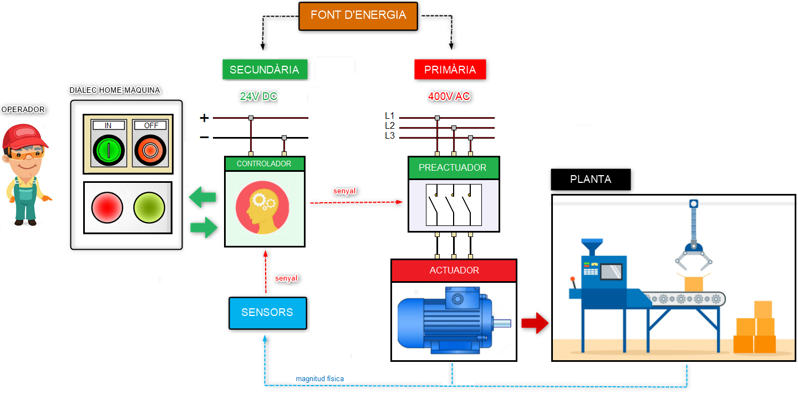

Un automatisme és un sistema que permet executar un procés seguint unes instruccions prèviament emmagatzemades i que és capaç mitjançant la retroalimentació de verificar que l'estat del procés és l'establert en les especificacions de disseny i en cas contrari, procedir a la seua correcció de forma autònoma.

Diàleg Home-Màquina
És el conjunt d'elements de comandament i senyalització que facilita l'intercanvi d'informació entre l'operador i l'automatisme. S'ha de tenir en compte que tots els automatismes han de permetre que l'ésser humà incideixi de forma directa, i en l'instant desitjat, sobre el procés, amb l'objectiu de solucionar situacions d'avaria, manteniment o d'emergència.
Font d'energia
L'energia pot ser elèctrica, neumàtica i hidràulica, per tant, quan parlem d'un automatisme elèctric ens estem referint a un automatisme que utilitza l'electricitat com a font d'energia. En els automatis elèctricl s'utilitzen dos nivells de tensió:
- Primària: els Actuadors elèctrics utilitzats en la indústria necessitem molta energia per al seu funcionament. Per tant, el subministrament d'aquesta energia es fa utilitzant tensions elevades, U=400V o U=692V, minimitzant d'aquesta manera les pèrdues per efecte joule. Ara bé , això té un inconvenient des del punt de vista de la seguretat, una contacte elèctric per part de l'operador en aquestes condicions pot ser molt perillós.
- Secundària: generalment sol utilitzar-se una tensió U=24V DC. Amb aquesta tensió subministrem energia al controlador, als sensors i al conjunt Diàleg Home-Màquina. Tal com es pot veure en la imatge anterior, l'operador no interacciona directament amb les màquines i per tant, evitem a més del risc elèctric, altres situacions de risc: cremades, atrapments, soroll, ...
Preactuadors
El preactuador és l'element que fa d'interfície entre dos element de l'automatisme que treballen en nivells energètics diferents: el controlador (24V DC) i l'actuador (400V o 692V AC en el cas de motors elèctrics). El preactuador rep un senyal de baixa energia (24V DC) per part del controlador i en funció d'aquest senyal connecta ("IN" - I) o desconnecta ("OFF" - O) de la font d'energia a l'actuador. De vegades, el preactuador té la possibilitar de regular la quantitat d'energia que pot arribar fins l'actuador, per exemple, fer que un motor gire a més o menys velocitat o fer que per una canonada passe una quantitat variable de cabal.
Actuadors
Els actuadors transformen l'energia (elèctrica, pneumàtica o hidràulica) en una seqüència de moviments (lineals o rotatoris), la funció dels quals és: iniciar, desenvolupar i finalitzar els processos existents en una planta industrial. Els actuadors més utilitzats en la indústria són els motors elèctrics i els cilindres neumàtics o hidràulics. Per exemple, un motor elèctric actua sobre una cinta transportadora de la següent manera: iniciant el moviment, aturant el moviment, alternant el moviment entre dreta i esquerra, fent que el moviment sigue més lent o ràpid, ...
Sensors
És l'element utilitzat per mesurar el valor de les magnituds físiques que volem controlar. L'estat de la variable es notificat al CONTROLADOR mitjançant un senyal de tipus elèctric. Alguns sensors d'ús freqüent en automatismes són: tacòmetres, sensors de proximitat, sondes de temperatura, de pressió o de nivell, etc.
Controlador
El controlador guarda en un programa tots els possibles estats del procés a controlar i en funció dels senyals que rep per part de l'operador i dels sensors modifica el valor del senyal que envia al preactuador. D'aquesta manera aconseguim que els procés es mantingue dintre d'uns paràmetres de funcionament prèviament establerts. Al mateix temps el controlador ha d'informar a l'operador de l'estat del procés, per exemple, si s'ha produït una avaria s'encendrà un llum de color roig en el panell de l'operador i s'escoltarà el so d'una alarma.